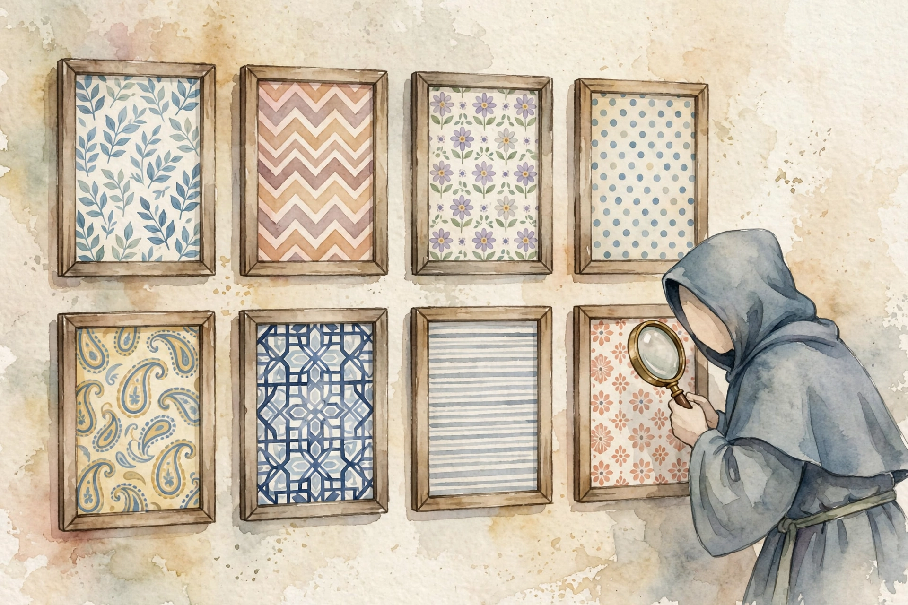
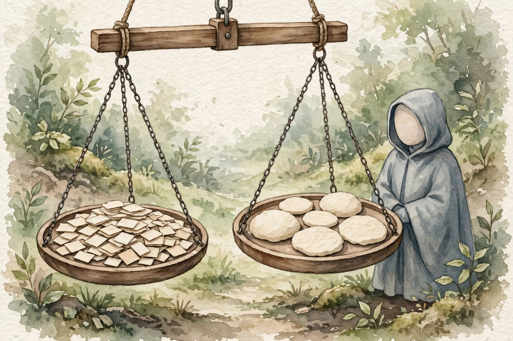

Companion · AWS AIP-C01 study guide · Unit 09
AWS reuses a small set of question moves and a fixed catalog of traps. This companion teaches the moves, the attack plans, and the trap names, then walks the five domain banks that drill them.
SOURCE / INTERPRETATION: HOW TO READ THE TAGS
From the lesson SOURCE: the idea, and every number beside it, comes from the cited section of the source. The phrasing is the companion's.
Illustration INTERPRETATION: invented by the companion: an analogy, a toy with made-up values, or a what-if. Never source content.
companion INTERPRETATION: companion voice: the idea above the tag is from the source. The generalization below it is the companion's.

From the lessonPattern 1 · Constraint extraction
Pattern 1 is constraint extraction. Each stem holds 2 to 4 hard constraints: cost, latency, no ML team, no redeploy, region lock. Underline each constraint before you read the options. Test each option against each constraint. An option that breaks one constraint leaves the set, and the survivor is the answer.
From the lessonPattern 2 · MOST correct
Pattern 2 is MOST correct, not merely correct. Two or three options can work, and tiebreakers pick the winner in a fixed order. Prefer a managed service over a custom build. Prefer the cheaper option at equal quality. Prefer the simpler architecture. Prefer AWS-native over third-party. A last test asks which option an AWS solutions architect can defend in a review.
From the lessonPattern 3 · Ordering and lifecycle
Pattern 3 is order and lifecycle. Find the lifecycle in the stem: agent, model, or build. Anchor the first step and the last step. Read the order each option proposes and kill each option that inverts the order. Middle steps break ties only. The true service lifecycle runs configure, prepare, version, alias, test.
From the lessonPattern 4 · Vocabulary precision
Pattern 4 is vocabulary precision. Each lever solves one problem class, and the stem word names the class. A term used at the wrong plane marks the option wrong, even when the service name is right.
From the lessonPattern 5 · Managed-first and the ladder
Pattern 5 is managed-first and the ladder. Options sit on a cost and effort ladder, and the cheapest rung that meets the requirement wins. Premium features lose when the stem states no need for them.
From the lessonPattern 6 · Wrong-plane distractors
Pattern 6 is the wrong-plane distractor. The option names a real service at the wrong layer: a content tool for a data task, a log tool for a metric task, a build tool for a runtime task. Plane checks kill these options fast.
IllustrationPattern 1 · Step-through
Open the Pattern 1 attack in order, on a generic stem.
Read the stem and underline each hard constraint: cost, latency, team, deploy, region. Count them. Most stems hold two to four.
Read option A against each constraint, one by one. One break ends the test.
Kill each option that breaks a constraint, and note the trap name for the kill where you can.
The option that survives each constraint is the answer. Check the trap name in the explanation after you commit.
From the lessonExam surface
The six patterns describe how AWS asks. This short chapter states what AWS asks about: the real test surface of each domain and its exam weight. The domain chapters later in this companion carry the weights one by one: D1 at 31 percent, D2 at 26 percent, D3 at 20 percent, D4 at 12 percent, and D5 at 11 percent.
Exam weight per domain, percent
Weights as the source states them in the domain heads. The five weights sum to 100.
| Domain | Weight | Focus |
|---|---|---|
| D1 Foundation Model Integration, Data Management, Compliance | 31% | Build and optimize GenAI apps |
| D2 Implementation and Integration | 26% | Agents, tools, workflow automation |
| D3 AI Safety, Security, and Governance | 20% | Responsible AI, guardrails, evaluation |
| D4 Operational Efficiency and Optimization | 12% | Customization, training, cost |
| D5 Testing, Validation, and Troubleshooting | 11% | Security, governance, monitor controls |
Source: domain heads in volume-question-patterns.html. Focus lines restate the why-this-chapter notes in the source.
From the lessonTactics · Four formats
Constraints come before options in all four formats. Multiple choice: extract constraints first, then eliminate, and never pick an option that breaks a stated constraint, even when the option sounds complex. Multiple response: judge each option alone against the constraints, because the two correct answers each stand alone and pairs that sound good as a pair mislead. Ordering: anchor the first and last steps, then fill the middle, with lifecycle dependencies as tiebreakers. Matching: match the most distinctive pair first to shrink the field, then the next pair, and never match by vague association, because each pair has one precise mechanism.
From the lessonTactics · Time management
Time is a tactic. The exam gives 75 questions in 180 minutes, about 2.4 minutes per question. Finish easy questions in under 90 seconds. Give medium questions the full budget. Cap hard questions at 4 minutes, then guess and move on. Never leave a question blank: the exam has no penalty for a guess.
From the lessonTrap catalog · First set
AWS reuses 30 distractors. The first set runs as the source lists them. Lambda 15-minute timeout: an option with a Lambda in a wait, sleep, or poll role for a long task fails, so go async or use Step Functions. Custom code versus managed: a stem with no ML team or a least-effort rule makes custom builds lose to managed Bedrock parts. Knowledge base scope: bases serve documents and never call APIs, never enforce access control, never run actions. Fine-tuning for fresh data: document change or a citation need means RAG, never fine-tune. Capacity confusion set: inference profiles serve availability, prompt routers serve cost by complexity, Provisioned Throughput serves reserved capacity, and a mix of the three fails. Guardrails wrong plane: guardrails filter content and do not extract data, enforce tenant isolation, or replace IAM. Ladder jump: the cheapest option that meets the need wins, and premium parts lose with no stated need.
From the lessonTrap catalog · Second set
CloudFormation for runtime config: a stack update is a deployment, and AppConfig gives runtime switch with no redeploy. ElastiCache as storage: the cache is ephemeral, and durable vectors live in a vector store. Residency blindness: cross-region failover fails a data residency rule, so check the region constraint first. Prompt Management plus guardrailConfig: Converse rejects that pair, and ApplyGuardrail standalone is the workaround. Missing prepare step: agent config changes need a prepare before test, and same behavior after a change means a skipped prepare. Misleading AccessDenied: check model availability in the region before permission debug. Converse for embeddings: Converse is text generation only, and InvokeModel serves embeddings. Built-in safety is enough: model alignment and guardrails do not move the deployer duty to evaluate and govern.
From the lessonTrap catalog · Third set
Proactive versus reactive: a stem with a proactive rule kills each option that reacts after failure, so token alerts count tokens before the call. Fabricated features: a real service with a capability it lacks, such as S3 nodes inside Bedrock Flows or guardrails with token quotas. Audit trail three-way: CloudTrail shows who called which model, CloudWatch custom metrics show which prompts a guardrail blocked and why, and invocation logs show prompt and response content. Step Functions Standard versus Express: Express caps at 5 minutes and cannot wait for callbacks, so human approval takes Standard. Sequential versus parallel: tight windows over many objects mean Distributed Map, with up to 10,000 parallel children over S3. Vector store by scale: small data takes Aurora Serverless with pgvector, medium and large data takes OpenSearch, and a 100 percent recall rule takes flat exact search.
From the lessonTrap catalog · Fourth set
Perceived versus real latency: slow reports with unique interactions mean stream output, because Provisioned Throughput fixes capacity and cache needs repeat prefixes, and neither speeds the first token. Prompt cache precondition: cache pays only with repeat long prefixes. Provisioned throughput misuse: idle reserved capacity with throttled on-demand calls means the code calls a base model ID in place of the provisioned model ARN. Guardrail detect versus block: a notify rule with no block rule is detect mode, a mode choice and not a service swap. SCP versus permissions boundary: org-wide model limits are SCP work, role limits are boundary work, and the full answer uses both. PII pipeline order: Macie finds PII in S3 at rest, Comprehend finds PII in text in line, guardrails redact or block at invocation. No public internet: interface VPC endpoints for Bedrock and Lambda in private subnets, and a NAT gateway option breaks the rule. Evaluation ladder: automatic metrics screen cheap, a judge scores quality at scale, humans review the top candidates, and A2I serves flagged critical cases only. Adjective precision: least custom effort means managed parts, least operational overhead means fewest self-managed parts, most cost-effective means token math.
From the lessonD1 · Bank Q1 to Q25
The D1 bank holds questions 1 to 25, the largest set in this volume, at the heaviest exam weight. Early items drill Pattern 1: a stem that demands proof on real documents first kills each option that spends on production before validation, so a Bedrock proof of concept on a document sample wins. A switch between three models with no code deploy and no restart kills stack updates and event buses, and AppConfig with a Lambda route layer and a stable gateway door wins. Each explanation names the trap the item sets, so the bank teaches the catalog as it drills the domain.
From the lessonD2 · Bank Q26 to Q47
The D2 bank holds questions 26 to 47 and tests agents, tools, and workflow automation. One item gives an agent a wiki with weekly updates and a citation rule: the knowledge base with a sync schedule wins, and the explanation names Pattern 6, because agents do not change the RAG rule. One item asks for console-built agents under CI/CD with code review: infrastructure as code wins, and the explanation names Pattern 5, because a deploy-with-review rule always means IaC. The set drills the prepare step, aliases, action groups, and tool contracts across its run.
From the lessonD3 · Bank Q48 to Q63
The D3 bank holds questions 48 to 63 and tests responsible AI, guardrails, and evaluation. One item asks how to prove that answers come from company documents: RAG evaluation with faithfulness, correctness, and citation precision wins, and the explanation names Pattern 6, because token counts and model self-reports are proxy traps. One item asks how to compare models for safety before selection: provider safety reports plus your own safety evaluation on the shortlist wins, and the note adds that guardrails do not make model choice moot. A finance item splits a advice ban from general education, and the denied topic is the control that fits the ban.
From the lessonD4 · Bank Q64 to Q73
The D4 bank holds questions 64 to 73 and tests customization, training, and cost. One item locks train data inside the company environment with no internet access: a VPC with no internet gateway or NAT, plus VPC endpoints for the services the job needs, is the only option that meets the network rule, and the explanation names Pattern 1. One item pairs a fast automated signal in development with a firm human judgment before release: ROUGE scores for iteration speed and human evaluation for the release call win as a pair, and the explanation names Pattern 2.
From the lessonD5 · Bank Q74 to Q81
The D5 bank holds questions 74 to 81 and tests the controls that keep the rest honest. One item pairs an audit rule with a PII rule: invocation logs to S3 with KMS encryption and PII mask before or at write time is the only option that meets both rules. One item needs a human check on each performance review before share: a Step Functions workflow with a task token gives approve-before-share, and the explanation names Pattern 4, because in-the-loop means approve before and on-the-loop means monitor after.
The pattern bank in counts: questions per domain bank
Counts follow the question numbers in the source banks. The full bank holds 81 questions.
| Bank | Question range | Count | Difficulty mix, whole bank |
|---|---|---|---|
| D1 | Q1 to Q25 | 25 | Easy 14 across the bank |
| D2 | Q26 to Q47 | 22 | Medium 45 across the bank |
| D3 | Q48 to Q63 | 16 | Hard 22 across the bank |
| D4 | Q64 to Q73 | 10 | · |
| D5 | Q74 to Q81 | 8 | · |
Source: question heads in volume-question-patterns.html. Ranges follow the first question number of each domain bank. The difficulty mix counts the difficulty tags on the page.

From the lessonVerification log · 2026-09-28
The authors verified each AWS service fact in this volume against official AWS documentation on 2026-09-28. Facts with no live official source carry an UNVERIFIED mark and appear in no question as asserted fact. The verified list covers the Converse API fields and content blocks, and the restriction that Prompt Management prompts cannot combine with inline guardrailConfig, inferenceConfig, system, or toolConfig in one call. It covers the guardrail control types: content filters in six categories at three strengths, denied topics, word filters as exact match, sensitive-information filters with block or mask plus custom regex, contextual ground checks, and Automated Reasoning checks, plus ApplyGuardrail as a standalone model-agnostic API.
From the lessonVerification log · Retrieval and inference facts
The log also verifies knowledge base chunk strategies (default, fixed-size, hierarchical, semantic, none, plus a custom Lambda), set per data source at creation. It verifies Titan Text Embeddings v2 dimensions at 256, 512, and 1024, and Cohere Embed English and Multilingual at 1024. It verifies the vector store list: OpenSearch Serverless, Aurora PostgreSQL, Pinecone, Redis, MongoDB Atlas, Neptune Analytics, OpenSearch managed cluster, and S3 Vectors. It verifies cross-region inference with geographic profiles and global profiles, and batch inference via CreateModelInvocationJob with S3 input and output and no tool calls.
Every lesson on this page, in order. Tap one to return to its chapter.